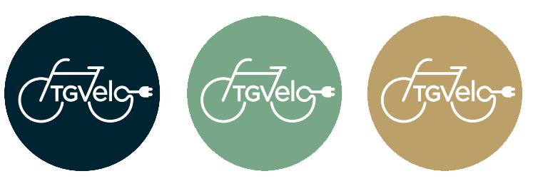
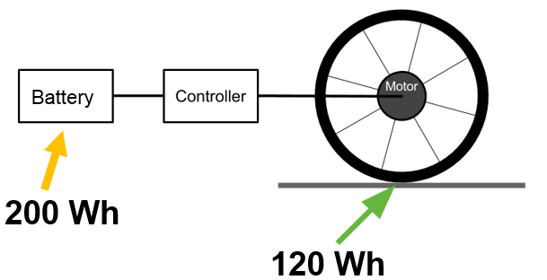
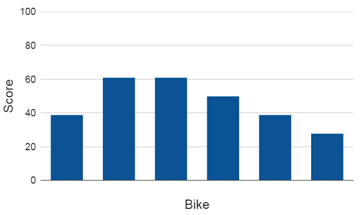
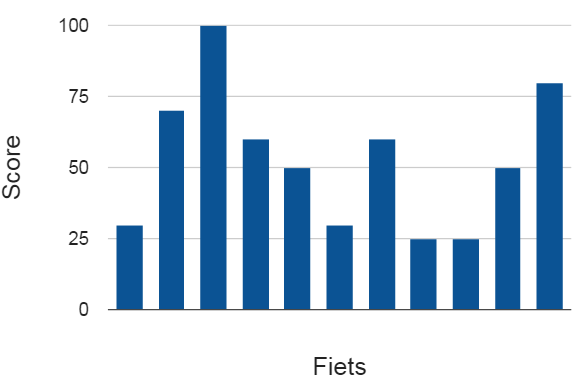
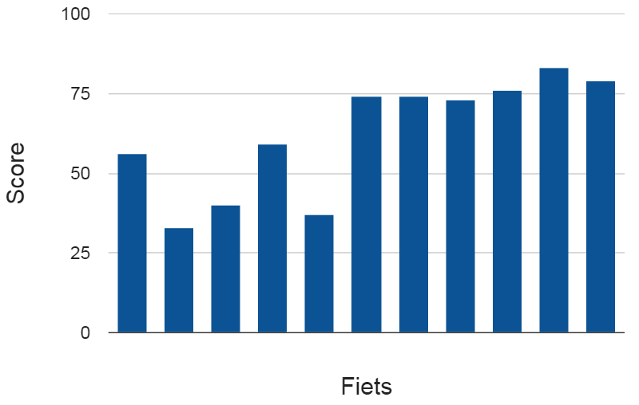
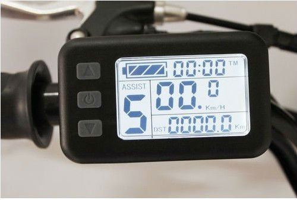

TGVelo Quality Label for Electric Bicycles
KU Leuven Technology Campus Ghent.
D. Callebaut, J. De Maeyer, B. Rotthier, J. Cappelle, E. Motoasca
Bicycle Quality
Tenders
Test results

Jeroen De Maeyer GC5 28/06/2016

Electric bicycle quality
- Introduction
- Combining existing knowledge
- New concepts
- Proven in practice
- Conclusion
2. Combining existing knowledge
Voorbeeld: trap 50 trap 70
New concepts
Net available energy (standard conditions defined)

New concepts
Design speed
Kwaliteitsraamwerk
- Algemene Info en energieprestaties
- Bruikbaarheid
- Betrouwbaarheid
- Veiligheid
Info: tractiecapaciteit

Info: tractiecapaciteit

Info: Wie past er op de fiets

Bruikbaarheid: pikkel

Bruikbaarheid: shimmy

Bruikbaarheid: regeling

Betrouwbaarheid: montagepunten

Veiligheid: remmen

Veiligheid: zichtbaarheid

Conclusion
Help people and organizations to measure the quality of electric bicycles.
TGVelo main principles
- Quantify quality
- Repeatable measuring of quality
- Integral approach to quality
TGVelo doelstellingen
De ambitie van de aanvragers is de uitbouw van een kwaliteitsraamwerk voor (elektrische) fietsen.
...naar een lastenboek toe werken...
Kwaliteitsraamwerk
- Algemene info en energieprestaties
- Bruikbaarheid
- Betrouwbaarheid
- Veiligheid
TGVelo main principles
- Quantify quality
- Repeatable measuring of quality
- Integral approach to quality
Integral: usability!
Solution independent (1-4 wheels, up to 50 kg, ...)
Organizing quality
- Useability: theft protection, controllability, luggage, ...
- Reliability: impact, redundancy, maintenance, ...
- Safety: visibility, brakes, tires, ...
Algemene info
- Ontwerpsnelheid
- Typische weerstand
- Tractiecapaciteit
- Hellingsgraad
- Laadtijd
- trap 50 / 70
- Geschikte grootte
- Houding
Bruikbaarheid
- Diefstalbeveiliging
- Bediening
- Regeling motor
- Handzaamheid batterij
- Pikkel
- Shimmy
- Starten stoppen
- Fiets aan de hand
- Schokdemping
- Geluid
- Bescherming spatwater
- Bescherming klimaat
- Bescherming vuil
Voorbeeld: bediening
- Licht vlot aan/uit
- Schakelen onder belasting
- Stilstaand schakelen
- Bedienbaar met handschoenen
- Blind bedienbaar
- ...

Betrouwbaarheid
- Bevestigingen / montage
- Impactproeven
- Banden
- Elektrische aandrijving
- Zout- en waterproeven
Veiligheid
- Zichtbaarheid
- Verlichting
- Remprestatie
- Banden
- Crashbescherming
- Bel
Meer details?
Alle testprocedures publiek beschikbaar tegen september
Tenders
Detailed description of components
= task of designer
Describe needs and minimum quality level.

Examples
Plastic mudguards.
Very specific detail, no quality level given.
-> Impact resistant? Water protection?
Examples
Hub gear with at least 8 gears (type Shimano or similar).
Very specific. Brand name is used as quality level.
-> speed @50 rpm and @70 rpm, useability
Examples
Braking distance below 6,5 m at 25 km/u.
Minimal quality level IS described. But circumstances not described. Brake force, weight, road surface, ... ?
-> brake coefficient, durability
Examples
Independent front and rear brake of type v-brake, roller brake, or similar.
Little to no information
-> brake coefficient, durability
Imposing minimum quality level
- Test procedures publicly available (at the moment only in dutch).
- TGVelo test centre
Kwaliteitsraamwerk?
- Snel zelf fietsen evalueren
- Uitgebreide evaluatie in testlabo
- Reeds toegepast in de praktijk